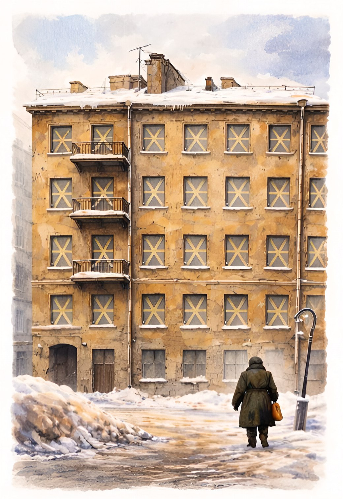

Цифровой музей «Дом, что хранит истории»
Перед вами дом в блокадном Ленинграде.
Окна дома заклеены крест-накрест, чтобы снизить воздействие ударной волны на стекло.
За каждым окном — память.
Приглашаем вас открыть истории этого дома!
Начните со входа в парадную. Поднимайтесь по этажам — шаг за шагом.
Коснитесь окна — и позвольте памяти заговорить.
